29 April 2022
To the waterfalls of Lamay
К водопадам Ламая
Неделя перед отъездом бурлила событиями и время текло со скоростью подобной горной реке: мы решили оставить Писак на какое-то время и исследовать побережье Перу, где океан перешёптывается с пустыней под красным солнцем. Воскресенье в календаре отмечено красным флажком ‐ в этот день мы начнём спускаться с гор к побережью Тихого океана и окажемся в абсолютно другом мире. Однако сегодня Пятница, которую мы решаем использовать, чтобы посетить водопад в Ламае - крошечном городке недалеко от Писака. К началу тропы нас довез улыбчивый перуанец, коллективо 2 сола. Дорога от Писака заняла около 15 минут.
ВХОД: 5 СОЛ
У начала тропы под наскоро сооружённый навесом и знаком «национальный парк» с выцветшей от солнца и времени фотографией водопада обнаружился молодой парень, собирающий подать с туристов - 5 сол с человека. Мы спрашиваем, как водопад, созданный природой, может принадлежать кому-то и быть платным. Он густо краснеет и почти шепчет: «не знаю, это просто моя работа», протягивая нам старинные билеты, напоминающие билеты в кинотеатр времён СССР.
ТРОПА:
Тропинка, поначалу вполне широкая и хорошо утоптанная, весело виляет среди деревьев, приютивших стаи зелёных попугаев, начинает подниматься вверх по горе, тянущейся к облакам. На самодельной «афише» парка изображён только один водопад, однако на деле, вдоль тропы их около 4-5, а также много красивых полянок возле реки, которые с радостью приютят пикник у обочины. Мы поднимаемся вверх, тропинка делает резкий рывок вверх, побольше воздуха в легкие и мы оказываемся возле водопада с небольшим природным бассейном вокруг. Одежда на камне, с воем прыгаем в ледяную воду, подставляя плечи потоку воды. Отогревшись на солнышке, продолжаем подъём. Ещё 100 метров вверх и рёв падающей воды подсказывает, что мы у цели. Водопад двухуровневый, можно забраться чуть повыше и оказаться в сердце потока, где образовался небольшой бассейн. Лучи солнца проскальзывают в ущелье, освещая его стены покрытые невероятно мягким мхом, играя со струями воды, превращая их в маленькие радуги.
ВСЁ ДАЛЬШЕ ВВЕРХ:
Водопад не является конечной точкой, тропа продолжает взбираться вверх, а река остаётся где-то внизу, напоминая о себе своей песней, что смешивается с ветром и перекличкой птиц. Еще 100 метров выше начинаются поля, которые мамиты в разноцветных платьях обрабатывают по сей день, балансируя на уклоне в 45 градусов.
Хайк к водопадам Ламая прекрасное времяпрепровождение. Мы советуем отправляться туда в будний день пораньше утром, дабы насладиться тишиной и купанием голышом без посторонних глаз. Открывайте сердце нашей планете, и вселенная вас поддержит во всём.
— Даша
•
To the Waterfalls of Lamay
The week before our travel was full of events and time flowed with the speed of a mountain river: we decided to leave Pisac for a while and explore the coast of Peru, where the ocean whispers to the desert under a red sun. Sunday is marked with a red flag on the calendar ‐ this is the day we will begin our descent from the mountains to the Pacific coast and find ourselves in a completely different world. Today, however, is Friday, which we decide to use to visit a waterfall in Lamay, a tiny town near Pisac. Collective for 2 soles drove us to the start of the trail. The road from Pisac took about 15 minutes.
ENTRY: 5 SOLES
At the beginning of the trail, under a hastily erected shelter and a "national park" sign with photo of the waterfall that dated under the sun through the years, a young guy was found collecting taxes from tourists ‐ 5 soles per person. We ask how a waterfall created by nature can belong to someone and be paid for. He blushes thickly and almost whispers: "I don't know, it's just my job," handing us vintage tickets, reminiscent of movie theater tickets from Soviet times.
TRAIL:
The path, quite wide and well-trodden at first, wiggles merrily among trees sheltering flocks of green parrots, begins to climb up a mountain stretching to the clouds. The homemade "poster" of the park shows only one waterfall, but in fact, there are about 4-5 of them along the trail, as well as many beautiful glades near the river that will happily shelter a picnic by the curb. We climb up, the trail makes a sharp upward spurt, more air in our lungs and we end up near a waterfall with a small natural pool around it. Clothes on a rock, with a howl we jump into the icy water, exposing our shoulders to the stream. After warming up in the sun we continue our ascent. It's another 100 meters up and the roar of the falling water tells us that we are close to the goal. The waterfall has two levels, you can climb a little bit higher and find yourself in the heart of the stream, where a small pool was formed. The sun's rays slip into the gorge, illuminating its walls covered with incredibly soft moss, playing with the water jets, turning them into little rainbows.
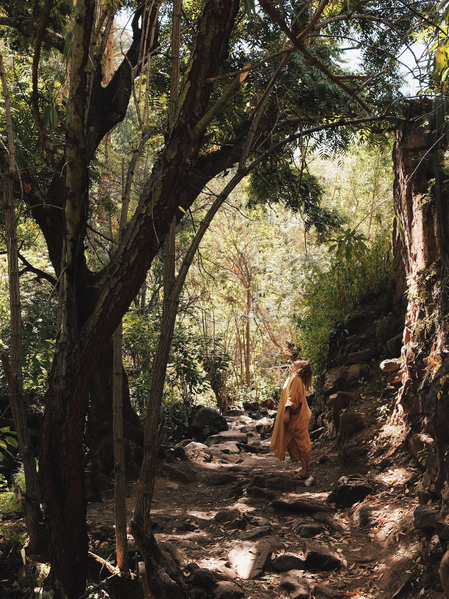
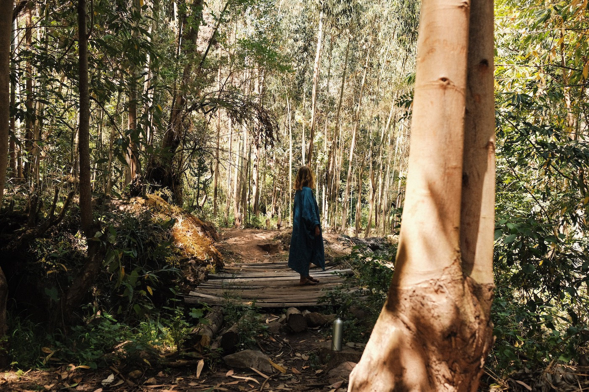
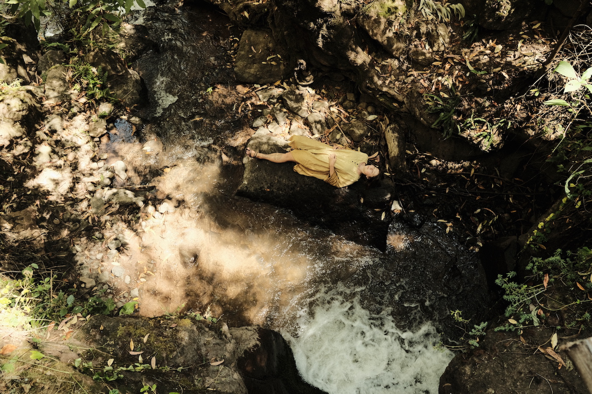
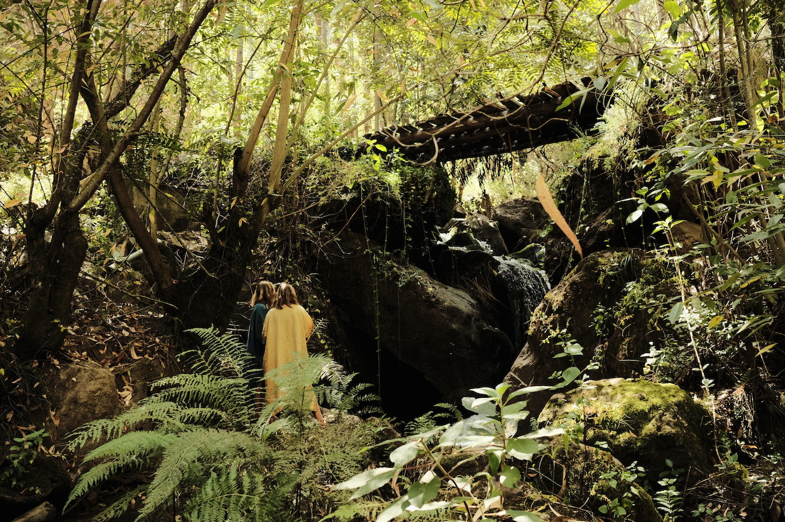
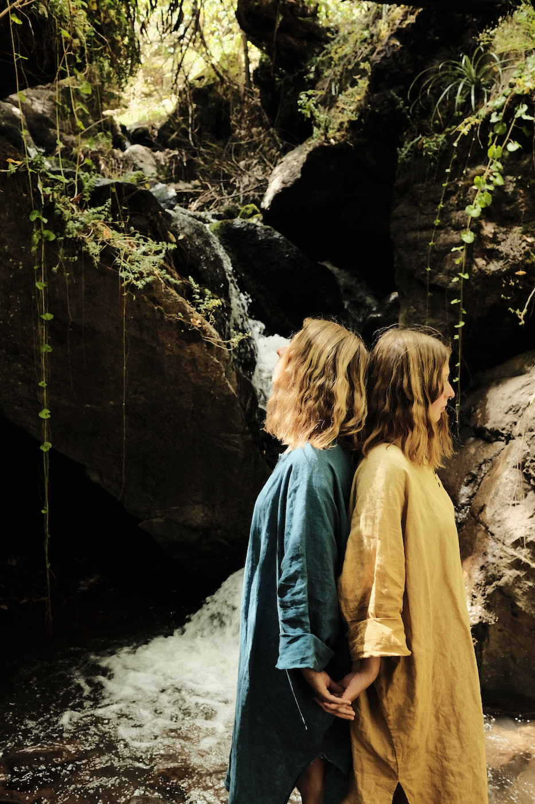
FURTHER AND FURTHER UP:
The waterfall is not the end point, the trail keeps climbing up and the river remains somewhere below, reminding us of itself with its song, which mingles with the wind and the roll call of birds. Another 100 meters higher and you are surrounded by fields. They are still cultivated by mamitas in colorful dresses, balancing on a 45-degree slope.
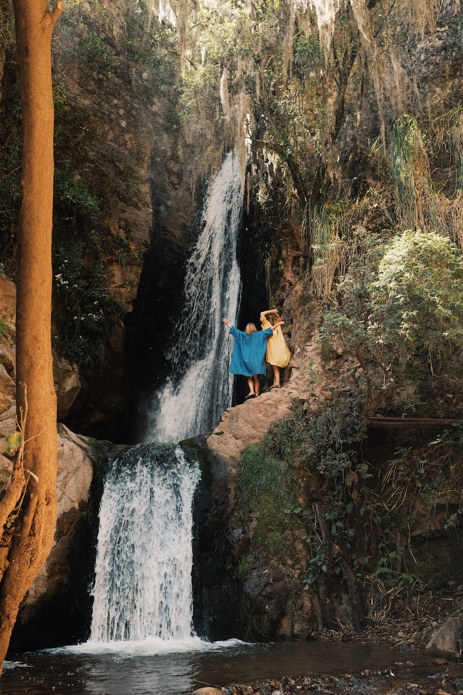
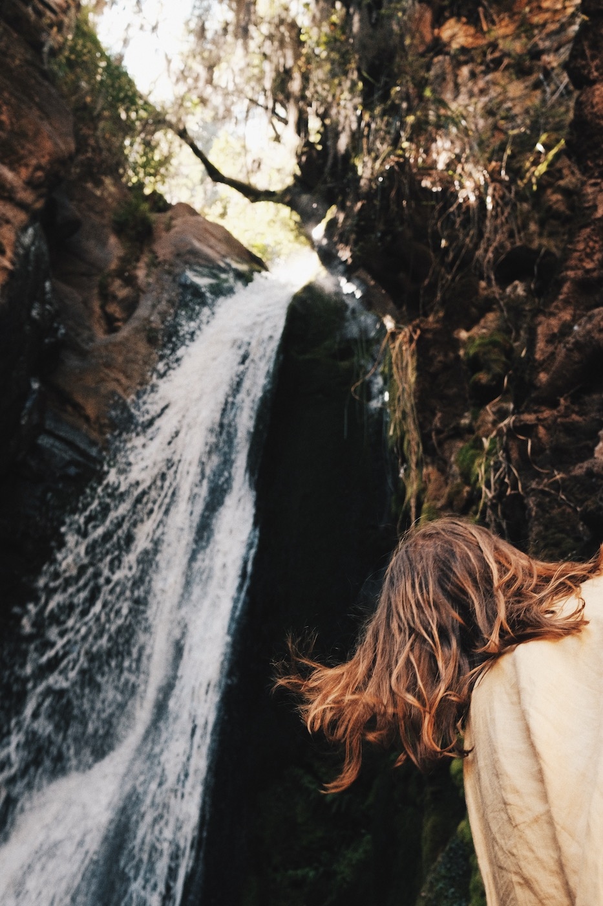
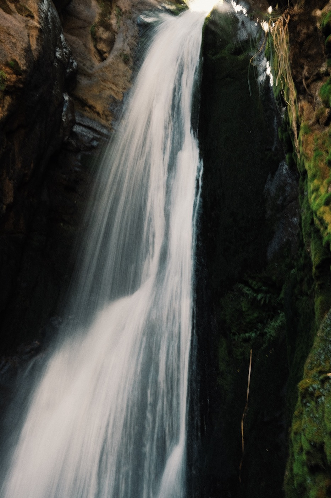
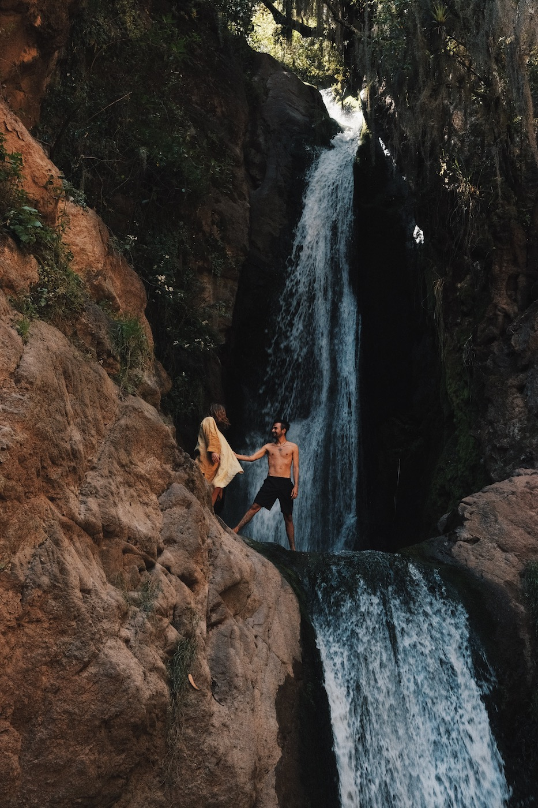
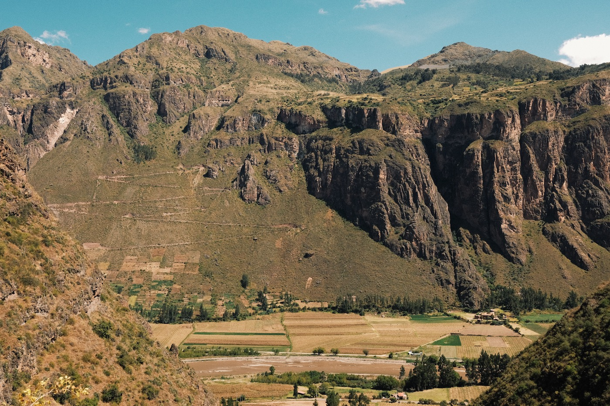
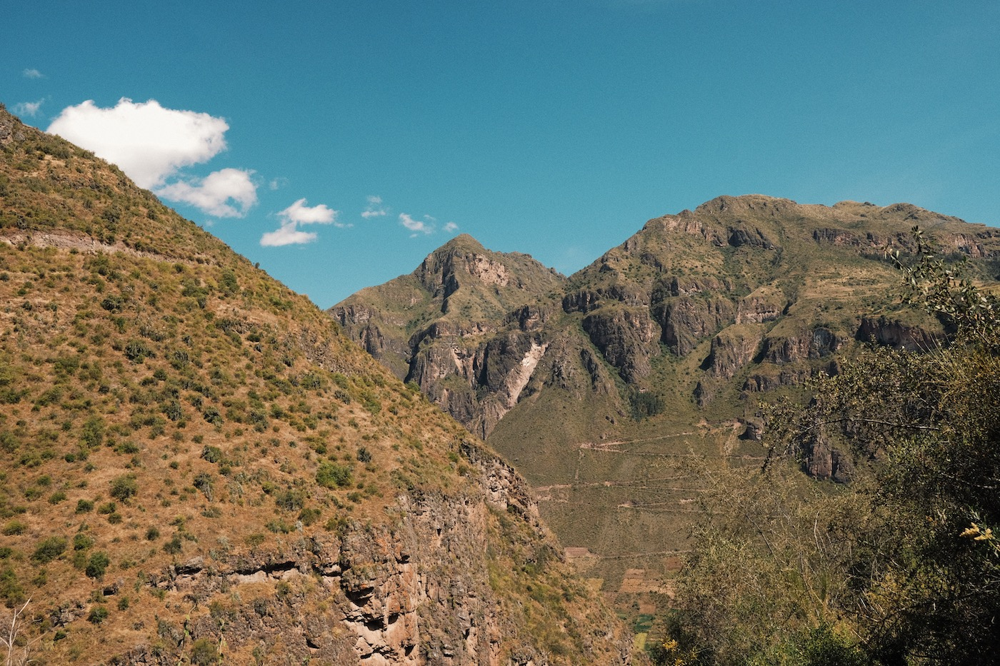
The hike to Lamay Falls is a wonderful way to spend free day in the Sacred Valley. We recommend going there early in the morning on a weekday to enjoy the silence and nude bathing without prying eyes. Open your heart to our planet, and the universe will support you in everything.
— Dasha